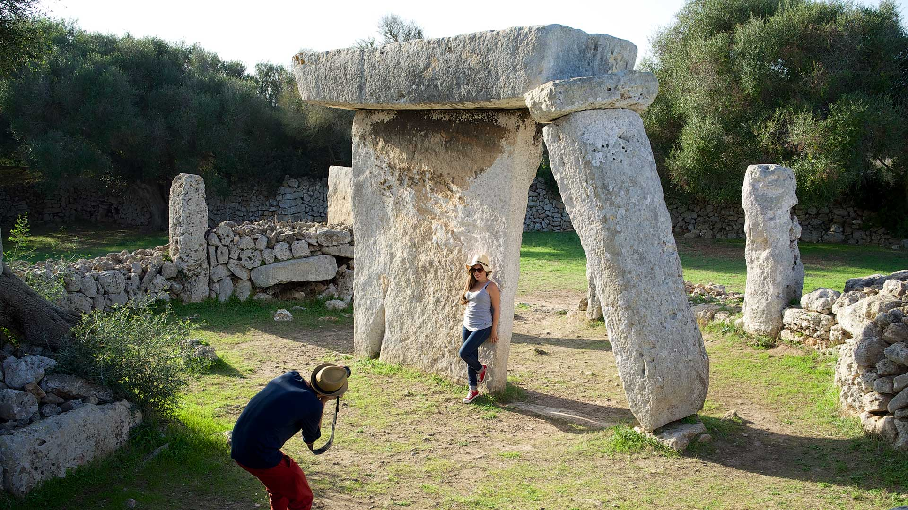

Informacion General
La imagen del centro histórico amurallada se ha ido configurando desde las épocas medieval y moderna o renacentista. Dalt Vila es la parte alta del casco histórico de Ibiza situado dentro del recinto amurallado renacentista, del siglo XVI.
Elegante y majestuosa, centinela de la seguridad del pueblo ibicenco que descansa a sus pies, encontramos la ciudad amurallada Dalt Vila, orgullo de los isleños y tesoro de la antigüedad. Esta ruta propone un recorrido por la muralla y los 7 baluartes que protegían Eivissa de los ataques de los piratas turcos. Desde este magnífico lugar declarado en 1999 Patrimonio de la Humanidad por la UNESCO, se divisa una instantánea inolvidable de la isla blanca.
La ciudad antigua ha sido históricamente, hasta finales del siglo XVIII, un enclave importante por su posición geográfica estratégica en la red de comunicaciones marítimas del Mediterráneo. No ha de extrañar el carácter defensivo, a la vez que protector, de Dalt Vila.
En el conjunto destacan los baluartes renacentistas del siglo XVI, el ayuntamiento (un antiguo convento dominico), la catedral de Santa María de las Nieves y las puertas que presenta el recinto, de las que sobresale el portal de ses Taules, junto al mercat Vell (mercado Viejo). Las calles se disponen según un trazado irregular, adaptándose de diferentes maneras a los desniveles.
La renovación y fortificación de Eivissa ciudad formó parte del plan de modernización de defensa costera mediterránea del Carlos I y de Felipe II. Intervinieron dos ingenieros de la Corona, Giovani Battista Calvi, que asumió la primera fase (iniciada en 1555) con los primeros baluartes, y Jacobo Paleazzi Fratin (desde 1575), que inició un nuevo baluarte, amplió otro y modificó el acceso principal. Según los especialistas, se trataba de aplicar los avances de la arquitectura militar que se estaban introduciendo en los territorios peninsulares. En las obras, que se mantuvieron hasta fines del siglo XVI, participaron trabajadores, maestros e ingenieros locales.
El acceso principal, la puerta del Mar o portal de ses Taules, tiene un carácter monumental, a modo de gran arco de triunfo flanqueado por dos estatuas romanas (réplicas, las originales están en el museo), un gran escudo con los emblemas de Felipe II y una lápida con los nombres del rey y del gobernador del momento, y la fecha de 1585. La entrada conserva parte del engranaje del puente levadizo sobre un foso excavado delante de la misma.